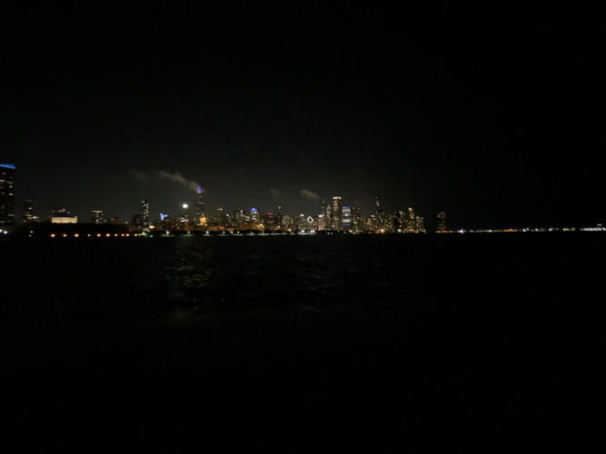
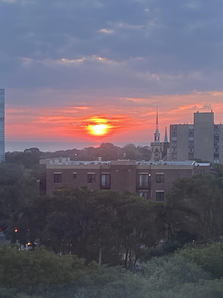

I like to ride around Downtown Chicago at night on Divvy Scooters and E-Bikes a lot.
I would go from Grant park all the way back to IIT for the fun of it.
I would even go to the planetarium at night on Lakefront Trail to enjoy the Chicago Skyline and stars.
Since my dorm room faces the lake, I would always wake up early in the mornin to view the beautiful sunrise.
During finals week, me and a group of friends took a trip down to St. Louis by train.
We spent a long time getting there, but we ate really good food and go to see many sights and landmarks.